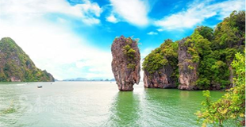

1
第1天
上海-普吉岛
早餐：自理 中餐：自理 晚餐：自理
住宿：当地特色五星（4钻）
航班：参考航班9C 8971（2300-0310）
千朝浪屿水世界即将在五一劳动节开园了。本次升级改造的重点在于提升客户体验的舒适度并在园区增建了多个品质服务区、亲子体验区、高端餐饮区，改造了部分体验区，升级了部分休息区的硬件设施。快来千朝浪屿水世界，邂逅你想要的美人鱼吧！
千朝浪屿水世界是全华北最大，水上游乐设备最多、最先进的室内水上乐园。

2
第2天
普及攀牙湾绿色海洋一日游普及攀牙湾绿色海洋一日游普及攀牙湾绿色海洋一日游
早餐：自理 中餐：自理 晚餐：自理
住宿：当地特色五星（4钻）
航班：参考航班9C 8971（2300-0310）
千朝浪屿水世界即将在五一劳动节开园了。本次升级改造的重点在于提升客户体验的舒适度并在园区增建了多个品质服务区、亲子体验区、高端餐饮区，改造了部分体验区，升级了部分休息区的硬件设施。快来千朝浪屿水世界，邂逅你想要的美人鱼吧！千朝浪屿水世界是全华北最大，水上游乐设备最多、最先进的室内水上乐园。 千朝浪屿水世界占地3.8万平方米，园内水处理系统引进世界最先进的臭氧水循环处理系统，不仅能

2
第2天
普及攀牙湾绿色海洋一日游普及攀牙湾绿色海洋一日游
早餐：自理 中餐：自理 晚餐：自理
住宿：当地特色五星（4钻）
航班：参考航班9C 8971（2300-0310）
千朝浪屿水世界即将在五一劳动节开园了。本次升级改造的重点在于提升客户体验的舒适度并在园区增建了多个品质服务区、亲子体验区、高端餐饮区，改造了部分体验区，升级了部分休息区的硬件设施。快来千朝浪屿水世界，邂逅你想要的美人鱼吧！千朝浪屿水世界是全华北最大，水上游乐设备最多、最先进的室内水上乐园。 千朝浪屿水世界占地3.8万平方米，园内水处理系统引进世界最先进的臭氧水循环处理系统，不仅能